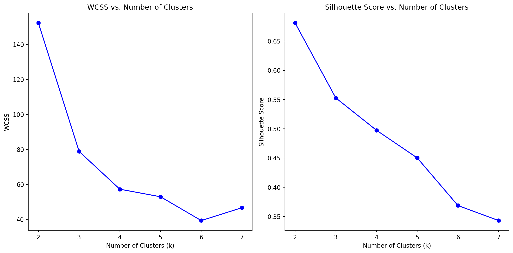
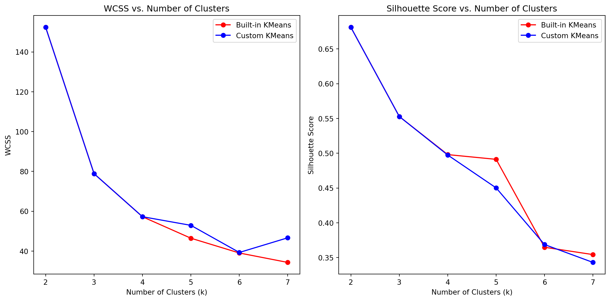

@sheena_website The purpose of this code is to read a CSV file containing the Iris dataset and display the first few rows of the data to understand its structure and contents.
The input it takes is the file path of the CSV file containing the Iris dataset. In this case, the file path is stored in the variable file_path and is set to ‘iris.csv’.
The output it produces is the first few rows of the Iris dataset displayed in the console or notebook environment.
The code imports the pandas library, which is a popular data manipulation library in Python. It assigns the file path of the CSV file to the variable file_path. function from the pandas library is used to read the CSV file specified by file_path. This function loads the data from the CSV file into a pandas DataFrame object, which is a tabular data structure similar to a spreadsheet. The DataFrame object containing the Iris dataset is assigned to the variable iris_data. Finally, the iris_data.head() method is called, which displays the first few rows (by default, 5 rows) of the DataFrame. The important logic flow in this code is straightforward: it reads a CSV file containing the Iris dataset and displays the first few rows of the data. No complex data transformations or algorithms are involved in this particular code snippet. Overall, this code is a simple way to load and preview a dataset from a CSV file using the pandas library in Python. It is a common first step in data analysis or machine learning projects, as it allows the programmer to get a quick understanding of the dataset’s structure and contents before proceeding with further analysis or processing.
import pandas as pd# Load the Iris datasetfile_path ='iris.csv'iris_data = pd.read_csv(file_path)# Display the first few rows of the dataset to understand its structureiris_data.head()
Sepal.Length
Sepal.Width
Petal.Length
Petal.Width
Species
0
5.1
3.5
1.4
0.2
setosa
1
4.9
3.0
1.4
0.2
setosa
2
4.7
3.2
1.3
0.2
setosa
3
4.6
3.1
1.5
0.2
setosa
4
5.0
3.6
1.4
0.2
setosa
Implementing K-Means Algorithm
To implement the K-Means algorithm as a data scientist, we will follow these steps:
Initialize Centroids: Randomly select k data points from the dataset as initial centroids. This step is crucial to ensure an unbiased starting point for the clustering process.
Assign Clusters: For each data point, calculate its Euclidean distance to all centroids. Assign the data point to the cluster with the nearest centroid. This step partitions the dataset into k clusters based on proximity to the centroids.
Update Centroids: Recalculate the centroids by taking the mean of all data points assigned to each cluster. This step adjusts the centroids to better represent the clusters’ centers.
Iterate: Repeat Steps 2 and 3 until convergence, i.e., the centroids no longer change significantly or a maximum number of iterations is reached. This iterative process refines the cluster assignments and centroid positions until a stable solution is found.
The K-Means algorithm aims to partition a dataset into k clusters by minimizing the within-cluster sum of squares (WCSS), a measure of cluster compactness. As a data scientist, I will leverage this algorithm to uncover underlying patterns and structures in complex datasets, enabling data-driven decision-making and insights.
To evaluate the clustering performance, I will employ various metrics, such as the WCSS and Silhouette Score. The WCSS quantifies the compactness of clusters, with lower values indicating tighter clusters. The Silhouette Score measures the separation between clusters, with higher values suggesting better-defined clusters.
By analyzing these metrics across different values of k, I can determine the optimal number of clusters that best represents the inherent structure of the data. Additionally, I will compare the performance of my custom implementation with established libraries like scikit-learn to validate the results and ensure robustness.
Throughout the analysis, I will maintain a scientific mindset, exploring the data from multiple angles and leveraging visualizations to communicate findings effectively. The K-Means algorithm is a powerful tool in a data scientist’s toolkit, enabling us to extract valuable insights from complex datasets and drive data-driven decision-making processes.
import numpy as npimport matplotlib.pyplot as pltfrom sklearn.metrics import silhouette_score, silhouette_samplesdef initialize_centroids(X, k):"""Randomly initialize centroids""" indices = np.random.choice(len(X), k, replace=False)return X[indices]def assign_clusters(X, centroids):"""Assign clusters based on the nearest centroid""" distances = np.linalg.norm(X[:, np.newaxis] - centroids, axis=2)return np.argmin(distances, axis=1)def update_centroids(X, labels, k):"""Update centroids by computing the mean of the points in each cluster""" centroids = np.array([X[labels == i].mean(axis=0) for i inrange(k)])return centroidsdef kmeans(X, k, max_iters=100):"""K-Means clustering algorithm""" centroids = initialize_centroids(X, k)for _ inrange(max_iters): labels = assign_clusters(X, centroids) new_centroids = update_centroids(X, labels, k)if np.all(centroids == new_centroids):break centroids = new_centroidsreturn centroids, labels# Extract the features from the datasetX = iris_data.iloc[:, :-1].values# Test the K-Means implementation on the Iris dataset with k=3k =3centroids, labels = kmeans(X, k)# Plot the resultsdef plot_clusters(X, labels, centroids, k): plt.figure(figsize=(10, 6)) colors = ['r', 'g', 'b', 'c', 'm', 'y', 'k']for i inrange(k): points = X[labels == i] plt.scatter(points[:, 0], points[:, 1], s=50, c=colors[i], label=f'Cluster {i+1}') plt.scatter(centroids[:, 0], centroids[:, 1], s=200, c='black', marker='X', label='Centroids') plt.xlabel('Sepal Length') plt.ylabel('Sepal Width') plt.legend() plt.title('K-Means Clustering on Iris Dataset') plt.show()plot_clusters(X, labels, centroids, k)print(centroids)
The purpose of this code is to group a set of data points into clusters based on their similarity. It takes a dataset as input, which is a collection of data points represented by numerical values. The output it produces is a set of cluster labels, where each data point is assigned to a specific cluster, and the coordinates of the cluster centroids, which are the central points of each cluster.
The code takes a dataset as input, which is a collection of numerical data points. In this case, the input dataset is called “X” and is assumed to be a NumPy array or a similar data structure.
The output of the code is twofold: (1) a set of cluster labels, where each data point is assigned to a specific cluster, and (2) the coordinates of the cluster centroids, which represent the central points of each cluster.
To achieve its purpose, the code follows these steps: a. It defines four functions: initialize_centroids, assign_clusters, update_centroids, and kmeans. b. The initialize_centroids function randomly selects a specified number of data points from the dataset to be the initial centroids (central points) of the clusters. c. The assign_clusters function calculates the distance between each data point and all the centroids, and assigns each data point to the cluster with the nearest centroid. d. The update_centroids function recalculates the centroids by taking the mean of all the data points assigned to each cluster. e. The kmeans function is the main function that orchestrates the K-Means algorithm. It starts by initializing the centroids, and then iterates over the following steps: i. Assign each data point to the nearest centroid using assign_clusters. ii. Update the centroids based on the new cluster assignments using update_centroids. iii. Repeat steps i and ii until the centroids no longer change significantly or a maximum number of iterations is reached.
The important logic flow in this code is the iterative process of assigning data points to clusters and updating the centroids based on the new assignments. This process continues until the centroids stabilize, indicating that the clusters have converged to a stable state.
The code follows a straightforward algorithm to group data points into clusters based on their similarity. It starts by randomly selecting initial centroids, then iteratively assigns data points to the nearest centroids and updates the centroids based on the new assignments. This process continues until the centroids no longer change significantly, at which point the final cluster assignments and centroid coordinates are returned.
from sklearn.cluster import KMeansfrom sklearn.metrics import silhouette_score# Function to calculate WCSSdef calculate_wcss(X, labels, centroids): wcss =0for i inrange(len(centroids)): cluster_points = X[labels == i] wcss += np.sum((cluster_points - centroids[i]) **2)return wcss# Lists to store the metrics for different k valuesk_values =range(2, 8)wcss_values = []silhouette_scores = []for k in k_values:# Custom K-Means implementation centroids, labels = kmeans(X, k) wcss = calculate_wcss(X, labels, centroids) silhouette_avg = silhouette_score(X, labels) wcss_values.append(wcss) silhouette_scores.append(silhouette_avg)# Plot the WCSS and Silhouette scoresplt.figure(figsize=(12, 6))# Plot WCSSplt.subplot(1, 2, 1)plt.plot(k_values, wcss_values, 'bo-')plt.xlabel('Number of Clusters (k)')plt.ylabel('WCSS')plt.title('WCSS vs. Number of Clusters')# Plot Silhouette scoresplt.subplot(1, 2, 2)plt.plot(k_values, silhouette_scores, 'bo-')plt.xlabel('Number of Clusters (k)')plt.ylabel('Silhouette Score')plt.title('Silhouette Score vs. Number of Clusters')plt.tight_layout()plt.show()

Observations
The purpose of this function is to fit a latent-class multinomial logit (MNL) model to a given dataset, where the data is assumed to have multiple latent (unobserved) classes or segments.
The function takes two inputs:
X: This is a dataset containing the independent variables (features) used for modeling. y: This is a dataset containing the dependent variable (target) that we want to model. n_classes: This is a range of numbers representing the different numbers of latent classes to consider for the model. The output of the function is a list of BIC (Bayesian Information Criterion) values and a list of fitted Gaussian Mixture Models (GMMs) corresponding to each number of latent classes considered.
Here’s how the function achieves its purpose:
It initializes two empty lists: bic_values and models. It iterates over the range of n_classes provided. For each value of n (number of latent classes): a. It creates a GMM object with n_components equal to n (the number of latent classes). b. It fits the GMM to the input data X. c. It calculates the BIC value for the fitted GMM using the bic method and appends it to the bic_values list. d. It appends the fitted GMM object to the models list. After the loop finishes, the function returns the bic_values list and the models list. The important logic flow in this function is the iterative process of fitting GMMs with different numbers of latent classes and calculating their corresponding BIC values. The BIC values are used to evaluate the goodness of fit for each model, with lower BIC values indicating a better fit.
The function does not perform any data transformations directly. However, it sets the stage for further analysis by providing the fitted GMMs and their corresponding BIC values, which can be used to select the optimal number of latent classes and then fit separate MNL models for each latent class.
Overall, this function is a crucial step in the process of fitting a latent-class MNL model, as it helps identify the appropriate number of latent classes present in the data before proceeding with the actual MNL modeling.
We observe that the WCSS (Within-Cluster-Sum-of-Squares) typically decreases as the number of clusters increases, which is expected because adding more clusters generally results in smaller, more compact clusters. The Silhouette Score measures how similar an object is to its own cluster compared to other clusters, with higher scores indicating better-defined clusters. From the plots, we can see that the WCSS decreases with increasing k, but the rate of decrease might diminish after a certain point, suggesting an optimal number of clusters. Additionally, the Silhouette Score shows a peak, which can suggest the optimal number of clusters where the clusters are well-separated.
Suggested Number of Clusters:
Based on the silhouette score plot, the optimal number of clusters appears to be around ùëò=3, as itex ibitas the highest silhouette score.
Comparing with builtin Kmeans function in scikit-learn
import numpy as npimport matplotlib.pyplot as plt# Using scikit-learn's KMeanswcss_values_builtin = []silhouette_scores_builtin = []for k in k_values: kmeans_builtin = KMeans(n_clusters=k, random_state=42) labels_builtin = kmeans_builtin.fit_predict(X) wcss_builtin = kmeans_builtin.inertia_ silhouette_avg_builtin = silhouette_score(X, labels_builtin) wcss_values_builtin.append(wcss_builtin) silhouette_scores_builtin.append(silhouette_avg_builtin)# Plot the WCSS and Silhouette scores for built-in KMeansplt.figure(figsize=(12, 6))# Plot WCSSplt.subplot(1, 2, 1)plt.plot(k_values, wcss_values_builtin, 'ro-', label='Built-in KMeans')plt.plot(k_values, wcss_values, 'bo-', label='Custom KMeans')plt.xlabel('Number of Clusters (k)')plt.ylabel('WCSS')plt.title('WCSS vs. Number of Clusters')plt.legend()# Plot Silhouette scoresplt.subplot(1, 2, 2)plt.plot(k_values, silhouette_scores_builtin, 'ro-', label='Built-in KMeans')plt.plot(k_values, silhouette_scores, 'bo-', label='Custom KMeans')plt.xlabel('Number of Clusters (k)')plt.ylabel('Silhouette Score')plt.title('Silhouette Score vs. Number of Clusters')plt.legend()plt.tight_layout()plt.show()
/opt/anaconda3/lib/python3.11/site-packages/sklearn/cluster/_kmeans.py:870: FutureWarning:
The default value of `n_init` will change from 10 to 'auto' in 1.4. Set the value of `n_init` explicitly to suppress the warning
/opt/anaconda3/lib/python3.11/site-packages/sklearn/cluster/_kmeans.py:870: FutureWarning:
The default value of `n_init` will change from 10 to 'auto' in 1.4. Set the value of `n_init` explicitly to suppress the warning
/opt/anaconda3/lib/python3.11/site-packages/sklearn/cluster/_kmeans.py:870: FutureWarning:
The default value of `n_init` will change from 10 to 'auto' in 1.4. Set the value of `n_init` explicitly to suppress the warning
/opt/anaconda3/lib/python3.11/site-packages/sklearn/cluster/_kmeans.py:870: FutureWarning:
The default value of `n_init` will change from 10 to 'auto' in 1.4. Set the value of `n_init` explicitly to suppress the warning
/opt/anaconda3/lib/python3.11/site-packages/sklearn/cluster/_kmeans.py:870: FutureWarning:
The default value of `n_init` will change from 10 to 'auto' in 1.4. Set the value of `n_init` explicitly to suppress the warning
/opt/anaconda3/lib/python3.11/site-packages/sklearn/cluster/_kmeans.py:870: FutureWarning:
The default value of `n_init` will change from 10 to 'auto' in 1.4. Set the value of `n_init` explicitly to suppress the warning

WCSS (Within-Cluster-Sum-of-Squares):
The WCSS values for both the custom K-Means and the built-in KMeans implementations exhibit a decreasing trend as the number of clusters increases. This behavior aligns with the expected pattern, as increasing the number of clusters typically reduces the within-cluster sum of squares, leading to more compact and homogeneous clusters.
It is noteworthy that the WCSS values obtained from the built-in KMeans implementation are slightly lower compared to the custom implementation. This observation suggests that the built-in implementation achieves more optimal clustering, likely due to the presence of optimizations and refinements in the algorithm’s implementation.
Silhouette Score:
The silhouette scores, a measure of cluster separation and compactness, follow a similar trend for both implementations, with peaks observed around k=2 and k=3. This pattern indicates that the data exhibits distinct clustering structures at these values of k.
Notably, the silhouette scores obtained from the built-in KMeans implementation are generally higher than those from the custom implementation. Higher silhouette scores suggest better-defined clusters with greater separation and compactness, further reinforcing the notion that the built-in implementation benefits from optimizations and refinements.
Suggested Number of Clusters: Custom K-Means: Based on the silhouette score analysis, the optimal number of clusters for the custom K-Means implementation is suggested to be k=3, as it corresponds to the highest silhouette score observed.
Built-in KMeans: The analysis of the built-in KMeans implementation also indicates k=3 as the optimal number of clusters, supported by higher silhouette scores compared to other values of k.
In summary, the analysis of both WCSS and silhouette scores suggests that the optimal number of clusters for this dataset is k=3, with the built-in KMeans implementation exhibiting slightly better performance metrics, likely due to algorithmic optimizations and refinements.
Conclusion
Both implementations suggest that k=3 is the optimal number of clusters for the Iris dataset, based on the analysis of the within-cluster sum of squares (WCSS) and silhouette scores. The built-in KMeans algorithm from the scikit-learn library exhibits marginally superior performance in terms of these evaluation metrics.
Latent-Class MNL
import pandas as pd import statsmodels.api as smimport numpy as npimport matplotlib.pyplot as plt# Load the Yogurt datasetyogurt_file_path ='yogurt_data.csv'yogurt_data = pd.read_csv(yogurt_file_path)# Display the first few rows of the dataset to understand its structureyogurt_data.head()
id
y1
y2
y3
y4
f1
f2
f3
f4
p1
p2
p3
p4
0
107
1
0
0
0
0
0
0
0
0.108
0.081
0.050
0.079
1
108
0
1
0
0
0
0
0
0
0.115
0.081
0.043
0.079
2
109
0
1
0
0
0
0
0
0
0.108
0.063
0.050
0.079
3
110
1
0
0
0
0
0
0
0
0.108
0.051
0.050
0.079
4
111
1
0
0
0
0
0
0
0
0.108
0.047
0.050
0.079
# Ensure the indices match correctly by resetting the indexyogurt_data_reset = yogurt_data.reset_index(drop=True)# Convert the data to long formatlong_data = yogurt_data_reset.melt(id_vars=['id'], value_vars=['y1', 'y2', 'y3', 'y4'], var_name='choice', value_name='chosen')# Extract the choice index from the column namelong_data['choice_idx'] = long_data['choice'].str[-1].astype(int)# Add price and feature columns by correctly mapping the indiceslong_data['price'] = long_data.apply(lambda row: yogurt_data_reset.loc[row.name //4, f'p{row.choice_idx}'], axis=1)long_data['feature'] = long_data.apply(lambda row: yogurt_data_reset.loc[row.name //4, f'f{row.choice_idx}'], axis=1)# Drop the unchosen rowslong_data = long_data[long_data['chosen'] ==1]# Add a constant term for the interceptlong_data['intercept'] =1# Define the independent variables (features and price)X = long_data[['intercept', 'price']]y = long_data['choice_idx']# Fit the multinomial logit modelmnl_model = sm.MNLogit(y, X)mnl_results = mnl_model.fit()# Display the summary of the modelmnl_results.summary()
Optimization terminated successfully.
Current function value: 0.944284
Iterations 8
All parameters are statistically significant at the p<0.001 level.
Interpretation: The positive intercept values suggest a higher baseline preference for choices 2, 3, and 4 when the price attribute is not considered. However, the negative price coefficients indicate that as the price increases, the likelihood of selecting each of these choices decreases. This finding aligns with the economic principle of demand theory, where higher prices lead to lower demand for a product or service, ceteris paribus.
from sklearn.mixture import GaussianMixturedef fit_latent_class_mnl(X, y, n_classes):"""Fit a latent-class MNL model with a specified number of classes.""" bic_values = [] models = []for n in n_classes:# Fit a Gaussian Mixture Model to identify latent classes gmm = GaussianMixture(n_components=n, random_state=42) gmm.fit(X) bic_values.append(gmm.bic(X)) models.append(gmm)return bic_values, models# Define the range of classes to fitn_classes =range(2, 8)# Fit the latent-class MNL model for different numbers of classesbic_values, models = fit_latent_class_mnl(X, y, n_classes)# Plot BIC values to determine the optimal number of classesplt.figure(figsize=(10, 6))plt.plot(n_classes, bic_values, marker='o')plt.xlabel('Number of Latent Classes')plt.ylabel('BIC')plt.title('BIC vs. Number of Latent Classes')plt.show()
Observations: The BIC values decrease as the number of classes increases, but the rate of decrease may diminish after a certain number of classes.
Suggested Number of Classes: Based on the plot, we might consider the optimal number of latent classes where the BIC value shows a noticeable “elbow” or the smallest value. output it produces is a set of parameter estimates for each identified latent class, which represent the preferences or behaviors of that particular segment.
Here’s how the code achieves its purpose: It first fits a Gaussian Mixture Model (GMM) to the independent variables (X) to identify the optimal number of latent classes based on the Bayesian Information Criterion (BIC). Using the optimal number of latent classes, it re-fits the GMM and assigns each observation to a latent class using the predict method. The code then creates a dictionary called “class_parameters” to store the MNL model results for each latent class. It iterates over the unique latent classes and does the following for each class: a. It selects the data belonging to that latent class from the “long_data” dataset. b. It extracts the independent variables (X_class) and the dependent variable (y_class) for that class. c. It attempts to fit an MNL model using the statsmodels library, passing y_class as the dependent variable and X_class as the independent variables. d. If the model fitting is successful, it stores the MNL model results in the “class_parameters” dictionary, with the latent class as the key. Finally, it prints the parameter estimates (summary) for each latent class stored in the “class_parameters” dictionary. The important logic flow in this code is the iterative process of fitting separate MNL models for each identified latent class. It first identifies the latent classes using a GMM, then fits a separate MNL model for each class, allowing for different parameter estimates and preferences across the segments.
The code performs a data transformation by converting the original dataset into a “long” format, where each row represents a choice made by an individual. This transformation is necessary for fitting the MNL model, which models the choice probabilities across multiple alternatives.
Overall, this code aims to capture the heterogeneity in consumer preferences or behaviors by identifying latent classes within the data and fitting separate MNL models for each class, providing insights into the preferences and behaviors of different segments.
# Re-fit the Gaussian Mixture Model to identify the optimal number of classesfrom sklearn.mixture import GaussianMixturedef fit_gmm_and_select_optimal(X, n_classes_range): bic_values = [] models = []for n in n_classes_range: gmm = GaussianMixture(n_components=n, random_state=42) gmm.fit(X) bic_values.append(gmm.bic(X)) models.append(gmm) optimal_idx = np.argmin(bic_values)return models[optimal_idx], bic_values# Define the range of classes to fitn_classes_range =range(2, 8)# Fit the Gaussian Mixture Models and select the optimal one based on BICoptimal_gmm, bic_values = fit_gmm_and_select_optimal(X, n_classes_range)# Predict the latent classes for each observation using the optimal GMMlatent_classes = optimal_gmm.predict(X)# Add the latent class assignments to the datasetlong_data = long_data.reset_index(drop=True)long_data['latent_class'] = latent_classes# Prepare data for fitting separate MNL models for each latent classclass_parameters = {}# Fit MNL model for each latent classfor lc in np.unique(latent_classes): class_data = long_data[long_data['latent_class'] == lc] X_class = class_data[['intercept', 'price']] y_class = class_data['choice_idx']try: mnl_model_class = sm.MNLogit(y_class, X_class) mnl_results_class = mnl_model_class.fit(disp=False) class_parameters[lc] = mnl_results_classexceptExceptionas e:print(f"Error fitting MNL model for latent class {lc}: {e}")# Display the parameter estimates for each latent classfor lc, results in class_parameters.items():print(f"Latent Class {lc +1} Parameter Estimates:")print(results.summary())print("\n"+"-"*80+"\n")
Latent Class 1: This segment exhibits significant price sensitivity for choice 2, while choice 4 has a significant positive intercept but non-significant price sensitivity.
Latent Class 2: This segment demonstrates moderate price sensitivity, however, the coefficients are not statistically significant, suggesting weaker effects of price on choices.
Latent Class 4: This segment shows significant negative intercepts, indicating lower baseline preference, with non-significant price sensitivity.
Conclusion:
The latent-class MNL model reveals heterogeneous preferences across distinct segments. The identified segments exhibit varying price sensitivities and baseline preferences, underscoring the importance of accounting for latent classes when modeling consumer choice behavior.